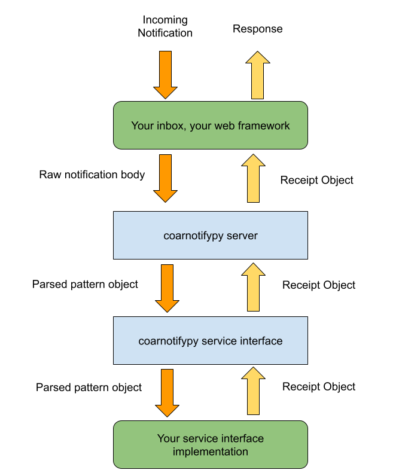

Implementing a server¶
To implement your own server-side inbox to receive and process COAR Notify notifications, this library provide some framework-agnostic supporting classes to help you get started.
The documentation for these classes is in coarnotify.server.
The architecture this supports for implementations is as follows:
Your web framework provides the routes and the handler for incoming requests. The raw notification
body can then be passed to the coarnotify.server.COARNotifyServer class to handle
parsing and validation of the notification. Once this is done it is passed on to your implementation of the
coarnotify.server.COARNotifyServiceBinding class. This carries out the actions required
for the notification, and then responds with a coarnotify.server.COARNotifyReceipt object which
makes its way back to your web framework to be returned to the client in whatever way is most appropriate.
Example Implementation¶
Built into this library is a Test Server which demonstrates a simple implementation of a server.
This uses Flask as the web framework, and provides an inbox route as the target for notifications.
@app.route("/inbox", methods=["POST"])
def inbox():
"""Retrieve and process a notification"""
pass
In order to process a notification, you will need to implement a custom service binding class
which extends coarnotify.server.COARNotifyServiceBinding. This receives the notification
and processes it.
The notification received by the service binding is a full COAR Notify model object.
This example implementation receives the notification and writes it to a file in a configured
directory. It then returns a location and a CREATED status.
class COARNotifyServiceImpl(COARNotifyServiceBinding):
def notification_received(self, notification: NotifyPattern):
store = app.config.get("STORE_DIR")
now = datetime.utcnow().strftime("%Y%m%d_%H%M%S")
fn = now + "_" + uuid.uuid4().hex
with open(f"{store}/{fn}.json", "w") as f:
f.write(json.dumps(notification.to_jsonld()))
location = f"{url_root}inbox/{fn}"
return COARNotifyReceipt(COARNotifyReceipt.CREATED, location)
This can now be passed to the COAR Notify server class on construction
server = COARNotifyServer(COARNotifyServiceImpl())
Finally, we can extend our inbox function in Flask to use the COARNotifyServer.receive()
function to process the notification and to handle the response to the user:
@app.route("/inbox", methods=["POST"])
def inbox():
notification = request.json
server = COARNotifyServer(COARNotifyServiceImpl())
try:
result = server.receive(notification)
except COARNotifyServerError as e:
return make_response(e.message, e.status)
resp = make_response()
resp.status_code = result.status
if result.status == result.CREATED:
resp.headers["Location"] = result.location
return resp
Using this approach, the web layer is responsible only for reading the incoming request and returning a suitbale response to the user. The COAR server handles the business of parsing and validating the content, and then passes the request on to a web-independent controller you have supplied to process the notification.